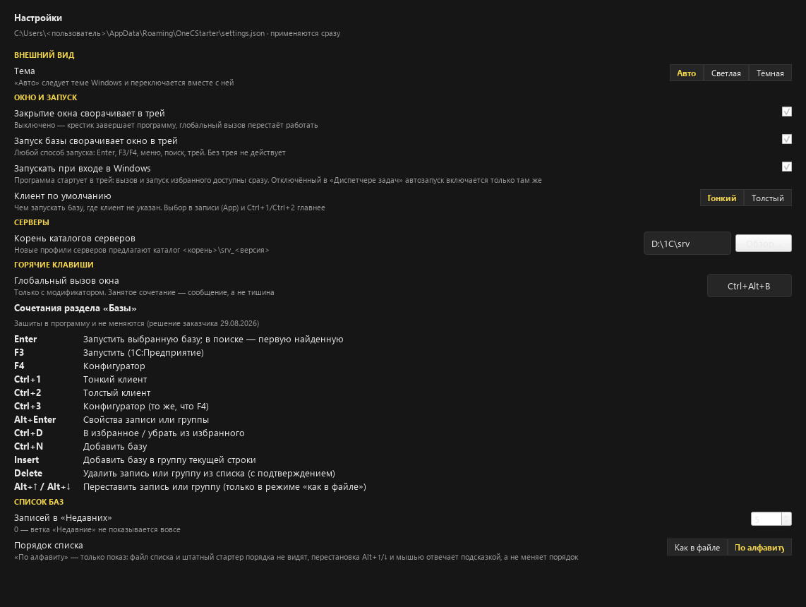
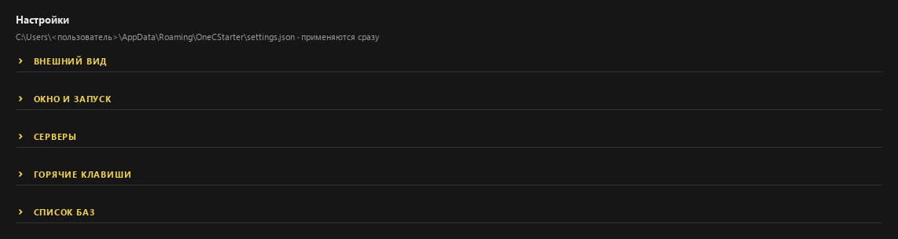
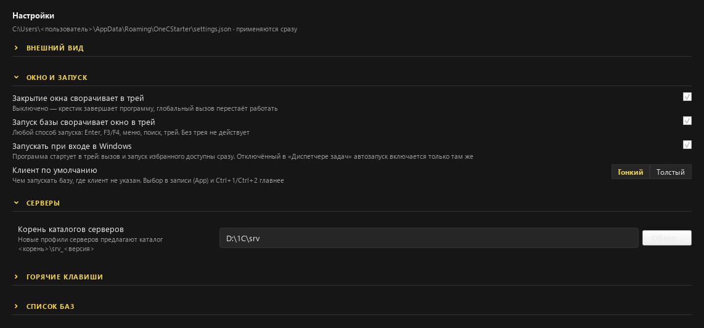
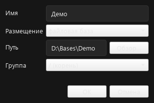
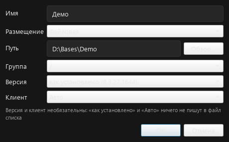
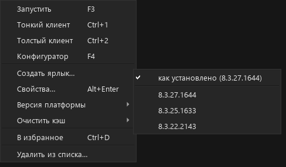

Четыре замечания к интерфейсу, отрисованные настоящим Qt
с проектной палитрой и stylesheet. Вариант «сейчас» совпадает
со скриншотом рабочей программы — значит остальные можно сравнивать
с ним напрямую.
| № | Замечание | Решение | Объём |
|---|---|---|---|
| 1 | Группы настроек трудно читаемы | Свёрнуты, голые заголовки, шеврон «>» | большой |
| 1.1 | Поле «Корень каталогов серверов» узкое | Тянется вместе с формой | малый |
| 2 | В диалоге добавления нет выбора версии | Версия + Клиент | средний |
| 3 | Смена версии из списка баз | Подменю, не двойной клик | малый |
Причина нечитаемости не в объёме страницы, а в перевёрнутой иерархии: заголовок группы мельче заголовка настройки и вровень с пояснениями, а отступ перед группой равен отступу между строками. Утверждённый вариант чинит и это, и объём: типографика правится, группы сворачиваются и по умолчанию свёрнуты.

Заголовок группы набран 8 пунктами — мельче заголовка настройки (10) и вровень с пояснениями. Отступ перед группой равен отступу между строками, поэтому группы не отделены ничем.

Пять заголовков, шеврон «>» слева. Втрое компактнее нынешних 860 px. Так раздел выглядит при каждом открытии окна.

Раскрытые «ОКНО И ЗАПУСК» и «СЕРВЕРЫ»: шеврон повернулся вниз, кегль заголовка вырос до 10 пунктов, появилась линейка и отступ перед группой. Здесь же видно широкое поле пути из замечания 1.1.
«>» в свёрнутом виде, он же повёрнутый вниз — в раскрытом
(решение заказчика 02.09.2026). Ни глиф ▸, ни
QStyle.setArrowType не годятся: первый зависит от того, есть ли
символ в шрифте — в офскрин-прогоне он выходил плашкой, — а второй рисует
залитый треугольник, а не «>». Две линии с круглыми стыками через
QPainter дают ровно нужную стрелку и не зависят ни от шрифта,
ни от темы оформления Windows.
Видно в раскрытом состоянии, в группе «СЕРВЕРЫ»: поле начинается сразу за подписью и тянется вместе с формой. Флаг ставится этой строке, а не всем — растянутый на всю ширину переключатель «Тонкий / Толстый» выглядел бы сломанным.
Свёрнутые по умолчанию группы ломают сторож, добавленный по мутационной
проверке 22.08.2026: isHidden() перестаёт отличать «виджет
потерян при сборке» от «виджет в свёрнутой группе». Лечится аксессором
expand_group() — существующие проверки раскрывают свою группу
первыми. Это и делает пункт 1 самым дорогим из четырёх.
«Версия» и «Клиент» уже существуют в диалоге правки —
в диалоге добавления их не строят, потому что add_infobase
их не принимает. Добавляются оба: довод «хочу задать сразу» относится
к ним одинаково.

Имя, размещение, путь, группа. Версию и клиент приходится выставлять следом, открыв свойства.

Обе строки необязательны: «как установлено» и «Авто» не пишут в файл списка ничего, обычное добавление не меняется.
Двойной клик по строке уже запускает базу — по любой колонке. Отдать его на «Версии» значит поставить рядом два исхода одного жеста: промах мышью либо запускает 1С по рабочей базе, либо открывает редактор вместо запуска. Подменю не занято ничем, работает с клавиатуры и показывает доступные версии вместо ввода вслепую.

Между «Свойствами…» и «Очистить кэш» — ускоритель стоит рядом с тем, что ускоряет. Пункты совпадают с диалогом: их отдаёт общая чистая функция, иначе списки версий разошлись бы.
Пути в мокапах обезличены (<пользователь>,
D:\1C\srv): файлы лежат в репозитории, а туда не идут ни имя
пользователя, ни реальные каталоги машины.
Выпадающие списки и кнопки в диалогах серые не по вине мокапа.
В stylesheet() правила есть только для именованных элементов,
обычные QComboBox и QPushButton Qt красит темой
по умолчанию — сравните «сейчас» и «станет», там одно и то же. Это отдельное
замечание к диалогам, в v2.1 не входит.